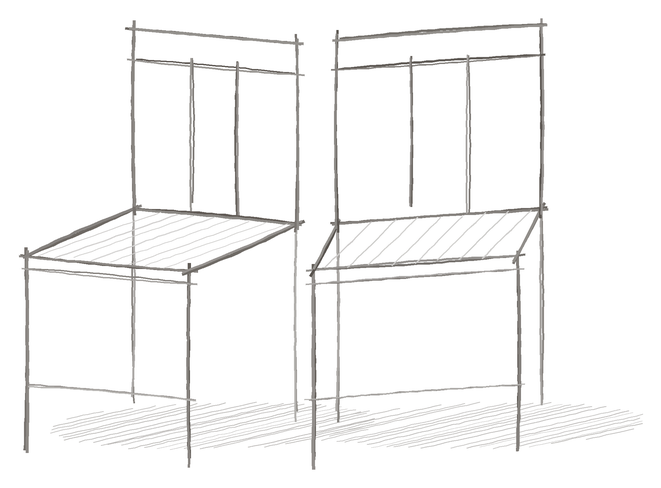
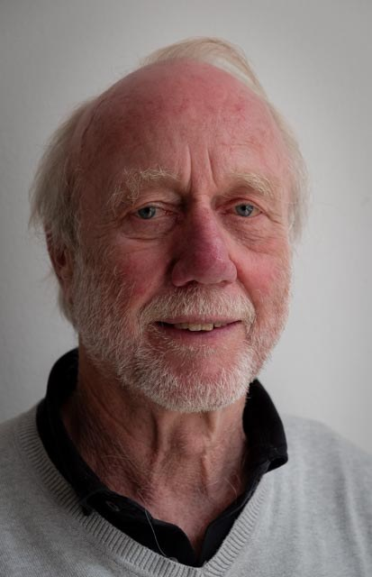
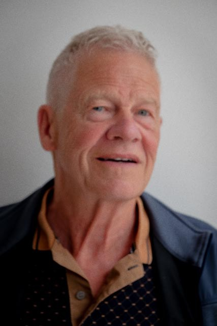
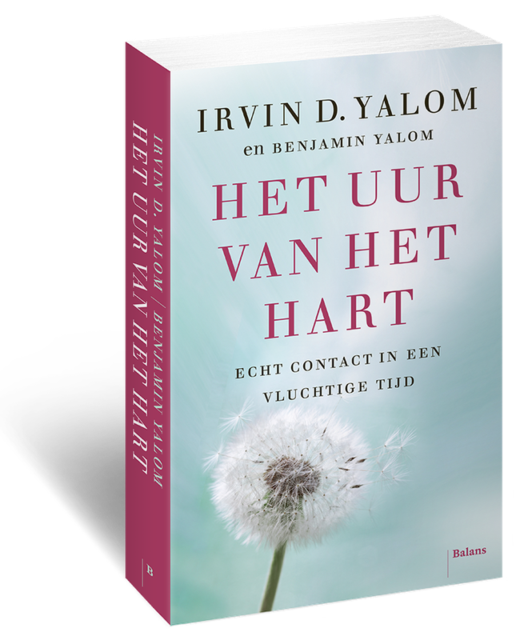

Loop je vast in je werk, je relatie, je studie of je leven? Bespreek het één uur lang met iemand die luistert, doorvraagt en vanuit levenservaring eerlijk zegt wat hij ziet.

naast je, niet tegenover je
Van CEO tot student: mensen komen met vragen over werk, relaties, studie of het leven zelf. Groot of klein, dat maakt niet uit.
“Moet ik van baan veranderen?”
werk
“Ik zit vast in mijn relatie. Hoe kom ik hier uit?”
relatie
“Hoe wil ik eigenlijk leidinggeven?”
leiderschap
“Waar doe ik het nog voor?”
betekenis
“Ik weet het eigenlijk niet” is vaak ook al een mooi begin.
Vier ervaren gesprekspartners, elk met een eigen achtergrond. Kies zelf met wie je praat, of laat ons meedenken.
Verschillende gezichten, verschillende expertises.
Traumagericht begeleider
Vastlopen na verandering, verlies of uitputting.
App met Janco
Adviseur, coach en auteur
Leiderschap, verandering en patronen die zichzelf in stand houden.
App met Gert
Psychiater
Vastgelopen patronen in relaties, gezinnen en teams.
App met PaulAdviseur en docent
Lastige beslissingen, conflicten en weerstand tegen verandering.
App met GuidoVia het formulier of met een WhatsApp-bericht. Een paar regels is genoeg.
Zo snel mogelijk spreken we je kort, telefonisch of via beeldbellen. Samen kijken we wat past: één gesprekspartner of twee.
Zestig minuten, helemaal voor jou. Aan tafel, online of tijdens een wandeling.
Met een inzicht, een besluit of een betere vraag. Heb je meer nodig? Dan wijzen we je de weg.
Hartuur is geïnspireerd door Het uur van het hart van psychiater Irvin D. Yalom. Daarin beschrijft hij hoe één intensief gesprek van een uur kan doordringen tot de kern.
Een vaste tijd houdt het gesprek scherp. Je komt met wat er speelt en je gaat weg met iets waar je mee verder kunt.
Merken we dat je meer nodig hebt? Dan helpen we je op weg naar de juiste hulp.

Laat je gegevens achter. We nemen zo snel mogelijk contact met je op voor een korte, gratis kennismaking. Daarin spreken we af met wie, wanneer en waar.
€250 particulier
€302,50 bedrijf (incl. btw)
Geld mag geen drempel zijn. Is dit bedrag te hoog voor je? Zet het in je aanmelding, dan kijken we samen wat kan. Menselijkheid gaat boven protocol.
Bij een bijzonder of complex vraagstuk kan vooraf overleg nodig zijn. Dat bespreken we dan eerst met je.
Liever direct contact?
App een van onze gesprekspartners.